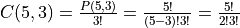

Basic Combinatorics¶
Enumeration¶
Combinatorics deals with counting. The most basic way of counting is to list out all possibilities.
The natural numbers are a great example of how items are laid out methodically. The units place is changed first until the last symbol is hit, then the tens place is incremented and the units place is reset, and so on.
Similarly, enumerating possibilites should be done systematically to ensure that no possibility is left out.
Example: List all possible three digit numbers made up of digits 3, 4, and 5
Following the same procedure as the natural numbers:
333
334
335
343
344
345
353
354
355
433
434
435
443
444
445
453
454
455
533
534
535
543
544
545
553
554
555
Example: List all partitions of 5
Start with the partition containing the largest number. Then, decrement this number and keep partitioning the remaining part recursively following the same rule.
5 = 5
5 = 4 + 1
5 = 3 + 2
5 = 3 + 1 + 1
5 = 2 + 2 + 1
5 = 2 + 1 + 1 + 1
5 = 1 + 1 + 1 + 1 + 1
Addition Principle¶
A person wants to go from A to B. The person can choose one of 3 trains that run between A to B or one of 5 buses that run on that route.
The total number of ways for the person to go from A to B is thus 3+5=8. The key concept here is OR. The person will either take a train or a bus.
Whenever counting involves mututally exclusive events, the number of ways from the mutually exclusive events can be added.
Multiplication Principle¶
A person wants to fly from A to C. There are no direct flights. The only way ther person can go is to fly on one of 3 flights from A to B, and then on one of 5 flights from B to C.
The total number of ways for the person to fly from A to C is thus 3x5=15. Here, the key concept is AND. The person has to take a flight from A to B and a flight from B to C.
4 English and 3 French books need to arranged on a book-shelf such that all the English books are together and all the French books are together.
Order the English books within a unit and order the French books within a unit and order the two units on the shelf ignoring the ordering within each unit
The total number of ways can thus be calculated by multiplying the number of ways for each of the three steps.
Permutations¶
In how many ways can persons A, B, and C sit on 5 distinguishable chairs?
A can choose a chair in 5 ways, B can choose a chair in 4 ways (as A has occupied one chair), and C can choose a chair in 3 ways (the remaining chairs). Thus, by the multiplication principle, the total number of ways is
This is called as the permumation of n objects taken r at a time and is denoted by .
So in the above case,
Note that if there were 5 persons sitting in 5 chairs, the problem is same as finding the number of ways of shuffling the order of 5 people. In this case, we have
Combinations¶
If in the above discussion, we replace the three persons with three indistinguishable robots. Thus, we just need to choose 3 chairs out of the 5. Which robot sits on which chair does not matter as the robots are indistinguishable. Hence, the number of ways is
The total number of ways computed as permutations have to be divided by the number of ways in which the three robots can be ordered as all orderings are identical when the robots are indistinguishable.
This way of counting is called combinations of n objects taken r at a time and is denoted by .
Thus, .
Note that choosing 3 chairs from 5 is equivalent to choosing 2 excluded chairs from the 5 chairs.
Hence,  . Combinations have this symmetry.
. Combinations have this symmetry.
Thus, the main difference between permutations and combinations is whether the objects are distinguishable and ordering matters or whether the objects are indistinguishable, ordering does not matter, and all orderings are counted as a single arrangement.
Power Principle¶
How many ways can 3 persons choose a drink from Coke and Pepsi?
Each person can choose a drink in 2 ways. Hence, from the multiplication principle, the total number of ways is  .
.
Thus, we have number of choices per person raised to the power of number of persons.
Complementary Principle¶
How many numbers smaller than or equal to 25 are relatively prime with 25?
This can be found by Calculating how many numbers have a common factor with 25 that greater than 1 and subtracting this nunber from 25. The numbers with the common factor are the ones divisible by 5.
The answer is .
Multinomial Assignment¶
In how many ways can 12 kids be divided into 4 teams of sizes 4, 3, 3, and 2?
Choose 4 kids from 12 and assign them to the first team, choose 3 from the remaining 8 and assign them to the second team, choose 3 from the remaining 5 and assign them to the third team. The rest of the kids go to the fourth team.
. This answer is correct, but could be cumbersome to evaluate. The key observation here is the following simplification.